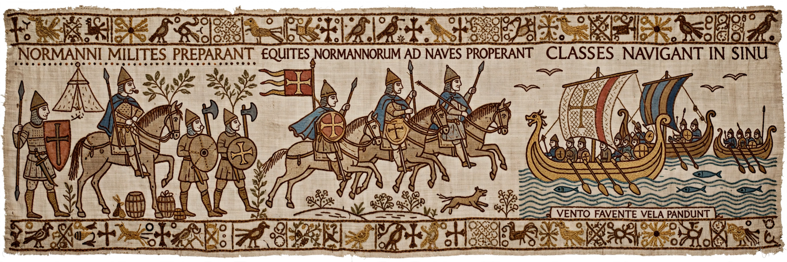

Bayeux Tapestry
The Bayeux Tapestry (French: Tapisserie de Bayeux) is an embroidered cloth nearly 70 metres (230 feet) long and 50 centimetres (20 inches) tall that depicts the events leading up to the Norman Conquest of England in 1066, culminating in the Battle of Hastings. It consists of fifty-eight scenes with Latin tituli (captions), embroidered in coloured wool yarn on linen. It is thought to date to the 11th century — made within a few years of the conquest, probably in England, traditionally said to have been commissioned by Bishop Odo of Bayeux, William the Conqueror's half-brother.
 | |
| Year | c. 1070s |
|---|---|
| Medium | Wool embroidery on linen |
| Dimensions | ~68.4 m × 0.5 m (surviving) |
| Location | Musée de la Tapisserie de Bayeux, Bayeux, Normandy |
Description and technique
Despite its name, the work is not a true tapestry (woven) but an embroidery: stem stitch for lettering and outlines, and laid-and-couched work for filling figures. It contains some 600 figures — 23 horses among hundreds of animals, ships, buildings and trees — arranged in a main register framed by borders filled with animals, fables, agricultural scenes and, during the battle scenes, the stripped corpses of the slain. The narrative runs from Edward the Confessor's instructions to Harold Godwinson, through Harold's oath to William, Halley's Comet (depicted as an omen in 1066), the Norman shipbuilding and Channel crossing, to the Battle of Hastings. The final scenes are lost; the original probably ended with William's coronation.
History
The tapestry is first recorded in a 1476 inventory of Bayeux Cathedral, where it was displayed annually. It survived the French Revolution (nearly being used as a wagon cover), was studied and reproduced under Napoleon — who exhibited it in Paris in 1803–04 as propaganda for his own planned invasion of England — and was twice removed by occupying forces during the Second World War before being returned to Bayeux. Since 1983 it has been displayed in a purpose-built museum. In 2007 it was inscribed in UNESCO's Memory of the World Register. A full-size replica, embroidered in the 1880s, is held by the Museum of Reading in England.
Interpretation
Scholars debate whether the tapestry is a Norman justification of the conquest — presenting Harold as an oath-breaker — or contains subtly sympathetic English elements pointing to its English makers. Either way it is an unparalleled visual source for 11th-century ships, arms, armour, dress and shipbuilding.
See also
Categories: 1070s works · Anglo-Norman art · Bayeux · Memory of the World Register